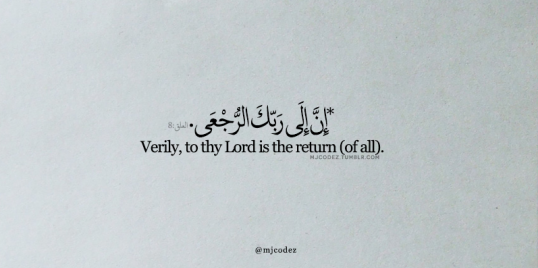
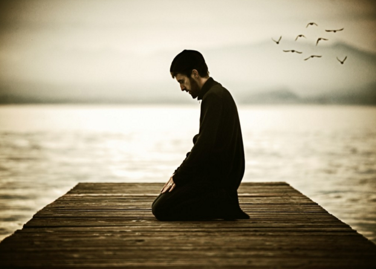
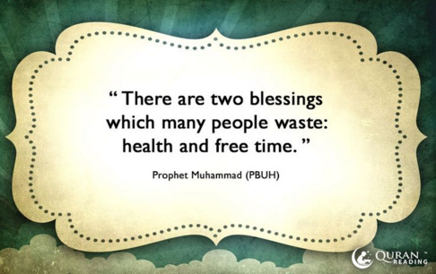

Blog
Time
"There is story about an Eastern King who assembled a council of wise men and tasked them to inscribe a ring with a phrase that would make him happy when he was sad. After some time the wise men came back with the ring, and on it was inscribed the words:
"This too shall pass"
But the unforseen consequence was the phrase also made him sad when he was happy. For nothing is forever, everything is temporary. Our thoughts, our emotions and feelings, our possession and wealth and our countless pleasures will soon pass away. But one thing will remain, one fact, one truth of this world. And that truth is the truth of death."
- Tousif Khan
The Past
"Sometimes people with the worst past, create the best future."
This quote was said by one of the most revered and respected men we know of, Umar Ibn Al-Khattab. The quote had a personal connection with Umar, as before he became the legend we know today, Umar was a very different man. He was the most effective of the Quraysh, enemies of Islam. He was an adulterer, drinker, and gambler. He had incense anger issues and a rooted hatred for Islam. But after hearing the verses from the Quran, his heart became softer, and he eventually accepted Islam as well as changing his ways. Umar Ibn Al-Khattab became the second Khalifah of Islam after Abu Bakr As-Siddiq. He ruled with justice, honour, and equality.
Umar changed from one of the most despicable and horrible person to the personification of justice we all see him as today. If someone like Umar could make a change like that, we all can too. Many of us have a past we aren't proud of, or are going through a situation that we aren't proud of. But with perseverance, restraint, self awareness, and the will to change, we all could become better Muslims and Muslimahs given time. No matter what past or background we come from, we could make ourselves the best of the best and create a new, prestigious and virtuous future.
Ayat al-Kursi
“In the name of God, Most Gracious, Most Merciful. GOD: There is no god besides Him, the Everliving, the Self-subsisting by Whom all subsist; slumber does not overtake Him nor sleep; whatever is in the heavens and whatever is in the earth is His; who is he that can intercede with Him but by His permission? He knows what is before them and what is behind them, and they cannot comprehend anything out of His knowledge except what He pleases, His knowledge extends over the heavens and the earth, and the preservation of them both tires Him not, and He is the Most High, the Great.” (Surat al-Baqarah 2:255)
Honesty
If there is one person you can be honest with, it should be yourself. Remember, Allah is always watching. There is no point in lying to yourself when you know Allah knows the secrets of all hearts.
Praying
One of the best ways to spend your time is by praying. Prayer, by its very nature, is a form of request or entreaty, and requires the full conscious participation of the one praying, with will, intellect, body and soul. When you pray, you are in direct connection with the Creator Who hears everything you say and responds – though not necessarily in the affirmative – to each request.
"Two Blessings"
The Quran encourages Muslims to be conscious of time. We are reminded that life in this world is nothing but temporary. We never know when death will be upon us, but we do know that the time will come for nothing is eternal. We must value the precious time we have in this dunya for the satisfaction of Allah (SWT). With the time we have, we should strengthen our deen and spend less time on worldly pleasures.
Ibn Abbas narrated that Prophet Mohammad (PBUH) said:
"There are two blessings which many people lose: (They are) health and free time for doing good." (Bukhari 8/421)
We displease Allah the Most High when we abuse time. It is imperative that time must be spent to fulfill our very purpose in life, which is to worship Allah (SWT) all throughout our lives. It is difficult to comprehend that some things that we are trying so hard to accomplish in this dunya will make no difference in our afterlife. Getting a promotion, a nobel peace prize, or even finishing our homework instead of praying will not benefit us in anyway after death. Personally, I struggle balancing my time because my religious duties and worldly duties, such as volunteering and school, clash a lot and it makes me so upset when I cannot get my priorities straight.
Allah made the importance of time very clear in the Qur'an when He said:
I have only created Jinns and Men, that they may serve Me. No Sustenance do I require of them, nor do I require that they should feed Me. For Allah is He Who gives (all) Sustenance, Lord of Power, Steadfast (for ever). Qur'an (51:56-58)
Mothers in Islam
Your Mother
Your Mother
Your Mother
Your Father
Jannah lies underneath your mothers feet. Remember to always be kind and sincere to them, for they have done so much for you.
Surah Al Asr
By time,
Indeed, mankind is in loss,
Except for those who have believed and done righteous deeds and advised each other to truth
and advised each other to patience
How to Avoid Riya'

Our Loving Prophet (p.b.u.h) warned us beforehand, "The thing that I fear most for you is the minor Shirk; Riya'."
How to Avoid Riya':
1. Befriend the Qu'ran: Qu'ran for any Muslim is the guide to the right path. People are forgetful creatures, and the Holy Book is here for reminder and rememberance.
2. Know Your Rabb: People often praise others who are at a higher position in life. However, they forget that the only one worthy of such praise is Allah, and only Allah.
3. Don't Fear the People: People sometimes are conscious of their actions because they fear the criticisms, but the only one who has any right to judge the people and any living thing is Allah.
4. Hide Good Deeds: People should hide their good deeds and perform some secret deeds only for the sake of Allah.
5. Dua': Dua' is the greaatest helper along the path of paradise.
Secrets of Ikhlas
Ikhlas is something that Allah puts in the heart of worshipers who seek it. Sheikh Omar AbdelKafy said that there are 3 secrets of Ikhlas:
The servant who has ikhlas does not look at it, because that would make him arrogant. For example, if we pray in a small room where no one can see us and yet due to that we feel that we are better than others because ‘obviously’ have ikhlas, we fall into the trap of arrogance. At the end of the day, success is only from Allah. Ikhlas is between the servant and His Lord; even the Angels don’t write it down because they don’t know it. Reflective of this is the story of the martyr, scholar and charitable man that we mentioned above – the Angels had written down the good they did, but it was Allah who exposed their intention. Satan cannot get to you if you have ikhlas 2
Examples of those with Ikhlas:
There is a beautiful example in the mother of Mariam (as). “When the wife of ‘Imran said, “My Lord, indeed I have pledged to You what is in my womb, consecrated [for Your service], so accept this from me. Indeed, You are the Hearing, the Knowing” (Qur’an, 3:35). She was having a beautiful private conversation with Allah. She told Him the child that was in her womb was solely for Him. She would raise it in the way of Allah, so that the child would be a worshipper of Allah, not for any reason save His pleasure. And for that sincere conversation, Allah rewarded her with one of the best women: Mariam (as), who fulfilled her mother’s pledge, by the grace of Allah.
Another example is Khalid bin al-Walid (ra). He was removed from his post as commander of the army by ‘Umar. Imagine being the head of a youth group, captain of a sports team, or a manager at a company. Suddenly there is a change of management – you are removed from your position and demoted to a regular team member or employee. How would you react? How would that affect your work? Instead of being offended and refusing to fight, Khalid fought with even more vigor. When he was asked why, he said: “I fight for Allah and not for Umar.” He wanted to ensure that he was not working hard because he was put in a specific position – rather wherever he was, he would work hard for the sake of Allah.
May Allah help us attain ikhlas.
Don't Divert Your Purpose

Everything you do doesn't need praise.
If you are aware of your intention
the glory is already yours.
The constant need for acknowledgement and approval
will divert your purpose.
-Alex Elle
Salaam Sheik: Self-Defense
"Bilal, the Ethiopian slave of Umayya bin Khalaf, was dragged by his master on hot sand with a rope tied to his feet."
"Lubina was a female slave of whose master tortured her, and whenever he paused, he said: “I have not stopped beating you out of pity. I have stopped because I am exhausted.”
"Zunayra was another female slave. When she declared her faith in Islam, Umar ibn al-Khattab, and Abu Jahl, took turns in torturing her until she became blind."
Discrimination against the Muslim community is not new. This practice of torture and slandering and hate, has started since the birth of Islam. Especially today, a new wave of islamophobia has taken course around the world and muslims everywhere are being targeted just for practicing their faith.
When someone is giving you hate, never give them evidence to back up their ignorant reasoning. What we need to remember in all of these situations is that our predecessors were discriminated to the point of death, yet still they never renounced their religion. To combat the hate, we follow their example: be calm, be optimistic, be the opposite of every bad thing they expect you to be. It's also important to educate yourself on your religion, if you are confident in the foundations of your faith, none of the warped lies in the media will ever sway your beliefs insha'Allah.
Remember this Hadith:
Rasul Allah (sal Allahu alaihi wa sallam) said: “If somebody reproaches you and makes you feel ashamed of any of your defects, do not make him feel ashamed of any of his defects.” [Abu Daud]
"Usually, when somebody points out one of our shortcomings, we immediately become defensive and start finding faults with them. But the advice of our beloved Rasul Allah (sal Allahu alaihi wa sallam), is that we should listen quietly and evaluate what we are being told. If there is something we can improve about ourselves, it is only to our own advantage to do so. If the criticism is unjustified, then we are rewarded for our patience and good behaviour in not retaliating. The angels will take care of defending our honour. Starting a counter attack opens the door for Shaytaan to come in and take over.
"Once Hazrat Abu Bakr Siddiq (radi Allahu anhu) was sitting with the Prophet (sal allahu alaihi wa sallam) when a man came and started to abuse Hazrat Abu Bakr. Hazrat Abu Bakr remained silent. Finally, he started to speak in his defence. At this point the Prophet (sal Allahu alaihi wa sallam) got up and left. Hazrat Abu Bakr immediately went after him and inquired if he had done something wrong. Rasul Allah replied that as long as he had been silent, angels had been speaking on his behalf, but when he started to respond, the devil came and sat down next to him. As the Prophet (sal Allahu alaihi wa sallam) could not remain seated where the devil was sitting, he left."
Salaam Sheik: Parents
Recently I went to a function with my family. Here's a little how it went, then one of us were seated as a table at a crowded restaurant, ready to dig in for some good food when my youngest sibling suddenly starts crying. I tentatively pay her and she bursts into full on wailing, her screams resonating throughout the restaurant. I remember feeling annoyed and embarrassed that my sister was ruining a good time and I found myself wanting to yell at her, but my mom, subhan'Allah, my mom was so cal about it. She tenderly held my sister, allowing my sister to climb into her lap, even though it was uncomfortable for her, and simply soothed her. Throughout the entire dinner, my sister gave my mother no rest, at two years old she was full of enough energy, screaming, and stubbornness to drive anyone crazy.
But not my mother.
Subhan'Allah think of this moment and magnify it by years. Years of you being stubborn, and frustrating, and so, so, annoying—but despite all, you were loved by your parents.
Communication with your parents is key, many people just don’t interact or talk to their parents much and it creates misunderstandings between them. At times it’s hard to be respectful to parents no matter how hard you try. And it is okay to disagree with what your parents say. And sometimes they may be wrong too and unwilling to hear your side. However, it's also important to remember that we are wrong too many times. The important thing is to know when you're in the wrong and to admit it to yourself.
When you are in a position where you feel like you can't hold it in anymore, remember no matter what, you cannot raise your voice over theirs. I know it's not easy. It definitely isn't, but this is the trials that Allah has placed for us. Tell them nicely that you disagree with them and I understand that they probably still won't listen. But it's our job as their children to be patient with them for as long as it takes, for they were patient with us for longer than we were alive.
Salaam Sheik: Which Rakat Am I On?
Forgetting which rakat you're on is common, but there are ways to combat that.We know that shaitaan come to us and try to distract us in prayer. If you forgot where you put your keys for example, shaitaan will come to you and remind you right then, just to make you lose focus. Soo step one would be to really clear your intentions from when you begin to make wudu to when you stand on the prayer mat and begin praying. Clear your mind. We often also get distracted if we dont know the meaning of what we're saying, so we can also try to learn. The best resources we have found in answer to this question are as follows:
"If this doubt about the number of rak'ahs has never happened to the person before, (or its happened on a rare occasion) then the musalli will have to break his salah and start over.
If these doubts occur frequently, then the musalli will have to use his/her best judgement to decide which rak'ah he/she is on. Once the musalli's heart is inclined towards a rak'ah number, he/she should stick with it and finish the salah normally. There will be no sajdah sahw.
If the musalli cannot decide at all which rak'ah number he/she is on, he/she should assume it is the smaller number of the two (i.e if the doubt is whether he/she is on rak'ah 2 or 3, he/she should assume it is rak'ah #2). Thereafter the musalli will sit and recite tashhaud in every single rakh'ah (including the current one) until the last (or presumably last) rak'ah."
If you forget which rakat you're in, then while you're at the final sitting position in whichever rakat you think is the last rakat, turn your head to the right and give Salam after reading the tashahud (At-tahiy-yatu lil-lahi.....) and then immediately go back down and make sujud without turning your head to the left as well. Then sit back up and read the tashahud again and continue and finish your prayer like usual.
This information doesn't have any traceable hadiths as of yet, but until we can further clarify it, insha'Allah the video should be the best answer.